Água Mineral Natural de São Lourenço da Serra — extraída a 180m de profundidade, protegida pela Mata Atlântica.
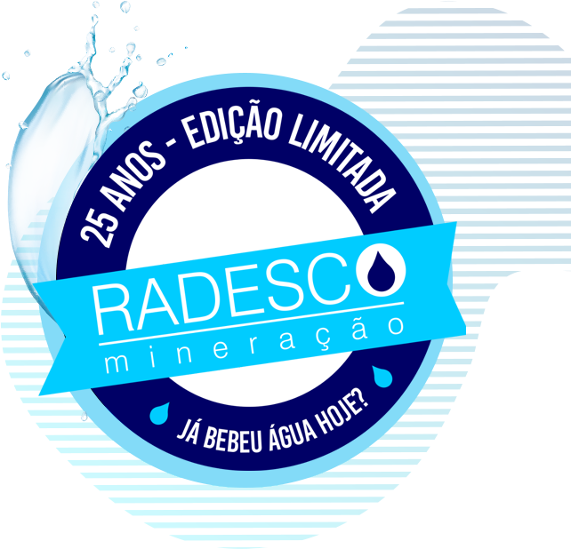
Nossa empresa foi fundada em 19/11/1996 e teve o efetivo início das atividades em 19/01/2000 com a concessão para lavrar água mineral outorgada pelo Ministro Rodolpho Tourino Neto.
Contamos com toda a tecnologia, cuidados especiais, pesquisas e análises regulares e assim garantimos toda a pureza original da água, a começar pela extração subterrânea a 180 metros onde permanece protegida de qualquer risco de contaminação.
A água São Lourenço da Serra tem o mesmo nome da cidade de origem, situada no portal do Vale do Ribeira, entre duas bacias hidrográficas. O município está totalmente inserido dentro da Área de Preservação dos Mananciais. Integra a Reserva da Biosfera da Mata Atlântica, com mata nativa cobrindo 80% do seu território, com clima tropical oceânico superúmido.
Qualidade comprovada através de análises periódicas
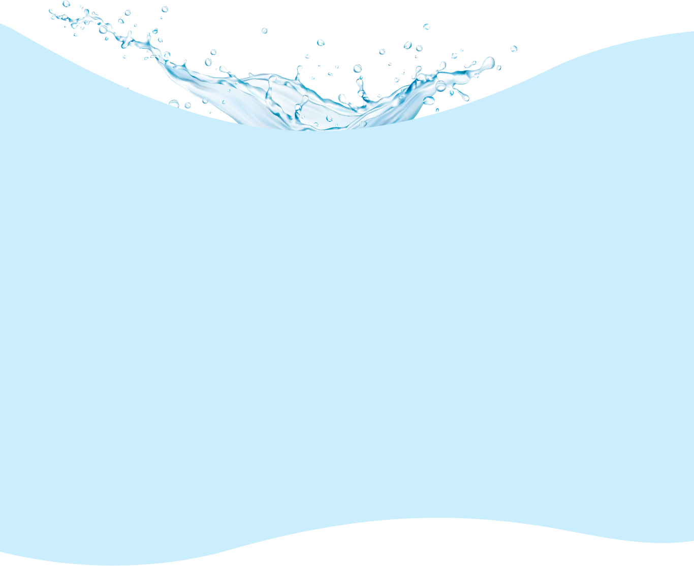
Extraída diretamente da fonte, sem nenhum tratamento artificial
Padrões rigorosos de armazenamento e transporte
Análises periódicas pelo Grupo EP Engenharia do Processo
Área de Preservação dos Mananciais no Vale do Ribeira
5L / 10L / 20L
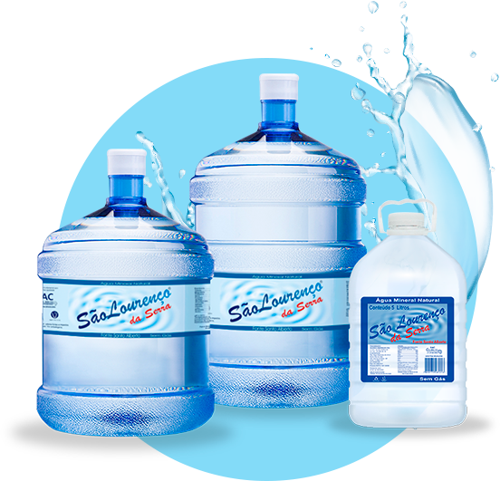
10L / 20L
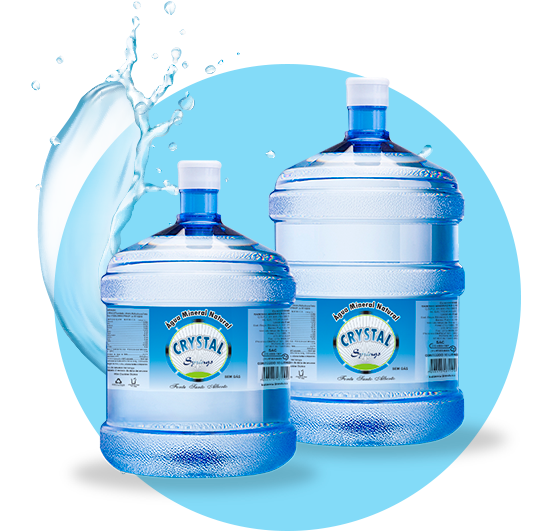
10L / 20L
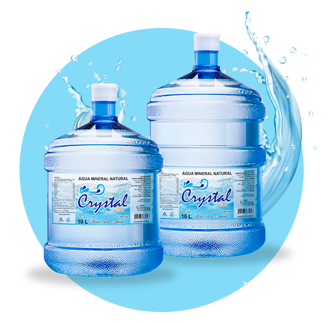
10L / 20L
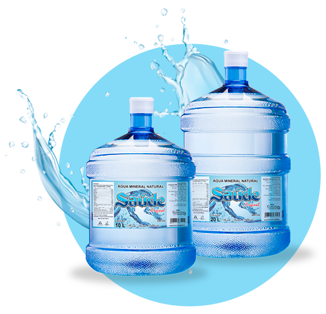
20L
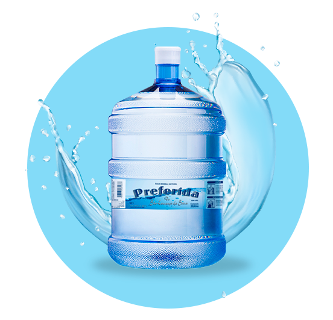
20L
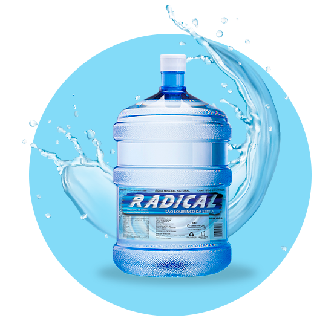
20L
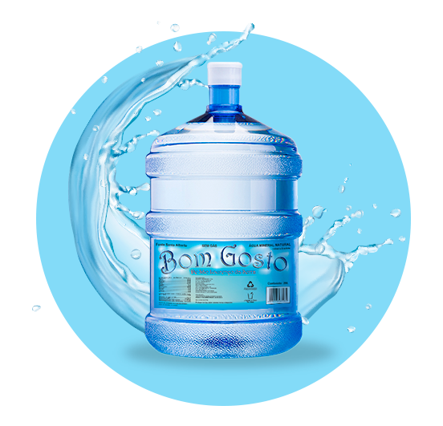
20L
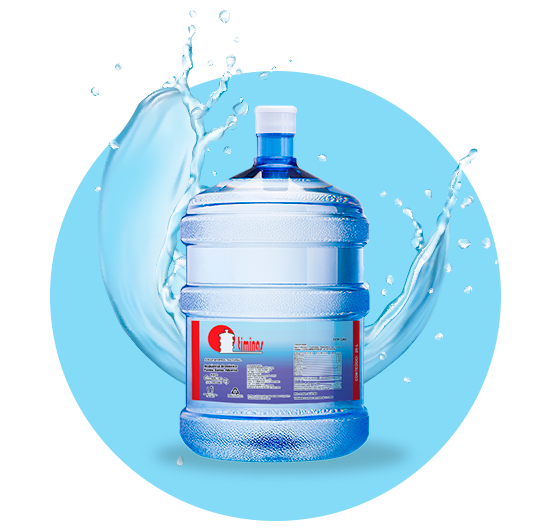
20L
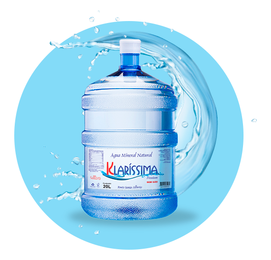
20L
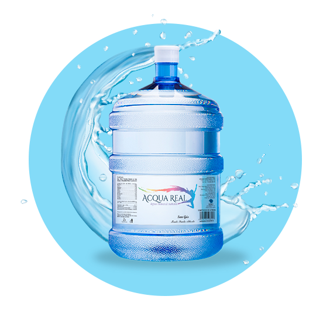
A água mineral é uma água natural subterrânea, que difere das comuns por suas características químicas, físicas e biológicas. Por isso, além de cumprir sua função de irrigar as células e hidratar o organismo, a água mineral é capaz de curar alguns males causados pela falta de sais minerais no organismo.
Águas minerais com equilibrada concentração de sais — como a São Lourenço da Serra — não possuem qualquer contraindicação, podendo ser consumidas com segurança em qualquer quantidade.
Não. Por lei, a água mineral natural não pode sofrer qualquer tipo de tratamento. Ela deve ser captada e envasada na própria fonte e chegar ao consumidor tal como foi concebida pela natureza.
Porque os sais e outros elementos presentes nas águas minerais oferecem efetiva contribuição à saúde do organismo. O Flúor atua na prevenção de cáries, o Magnésio aumenta o vigor físico e previne a hipertensão, o Zinco ajuda no processo curativo, o Bicarbonato controla a acidez do estômago, o Cálcio previne a osteoporose e assim por diante.
Depois que a água da chuva cai e penetra no subsolo, durante dezenas de anos ela percorre diversas variedades de rocha existentes na natureza, das quais vai absorvendo sais minerais e outros nutrientes.
Uma água só pode ser classificada como mineral natural se tiver um conteúdo permanente de sais minerais e em quantidades mínimas estabelecidas por lei. Esta classificação é feita pelo Departamento Nacional de Produção Mineral, após rigorosas análises.
Rodovia Regis Bittencourt, 1495
Paiol do Meio, São Lourenço da Serra - SP
CEP 06890-000
Conheça as marcas que fazem parte do time de distribuidores Radesco.
Quero ser distribuidor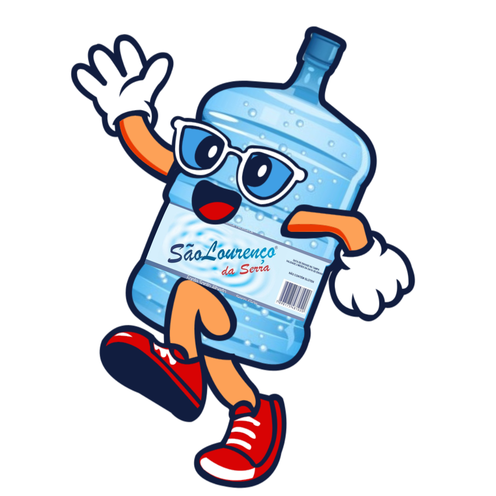
Quer um site como este para o seu negócio? Clique no botão e fale conosco!
Clique Aqui